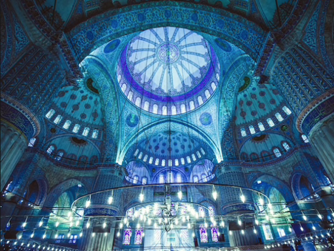
.
Our first morning in Istanbul and we headed off to see the Blue Mosque, but stopped for a quick lunch first.
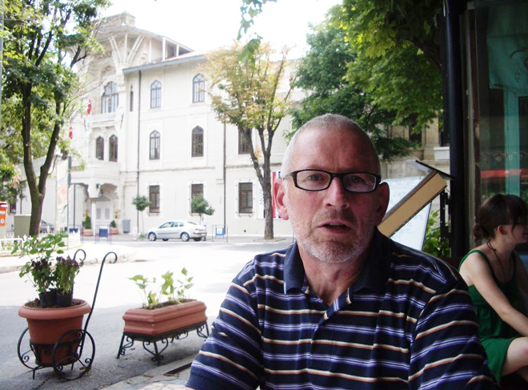
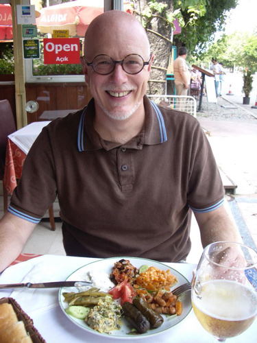
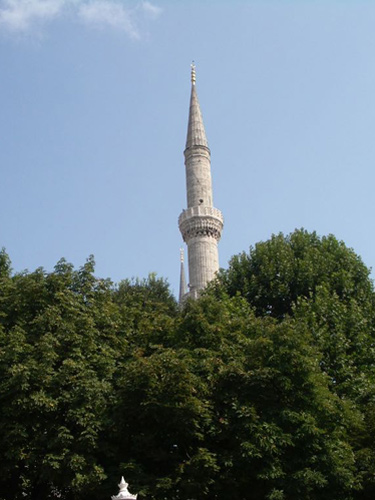
Over lunch we were tantalised by views of minarets from the Blue Mosque so we snaffled our food and headed to the Mosque, first stopping to view the remains of the Hippodrome, the focus of the city for more than 1,000 years before it fell into ruin. The four sides of the carved base depict a chariot race with Roman Emperor Theodosius I preparing to crown the winner.
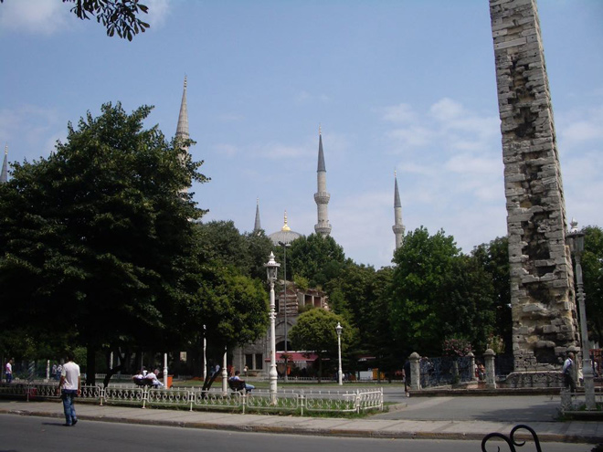
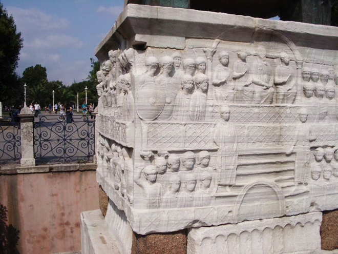
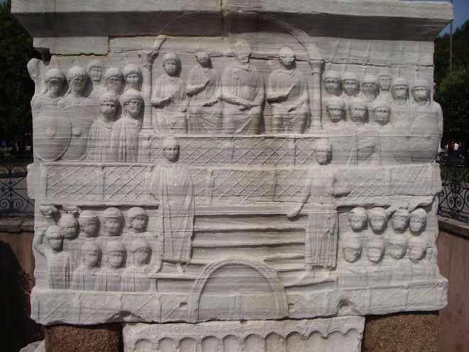
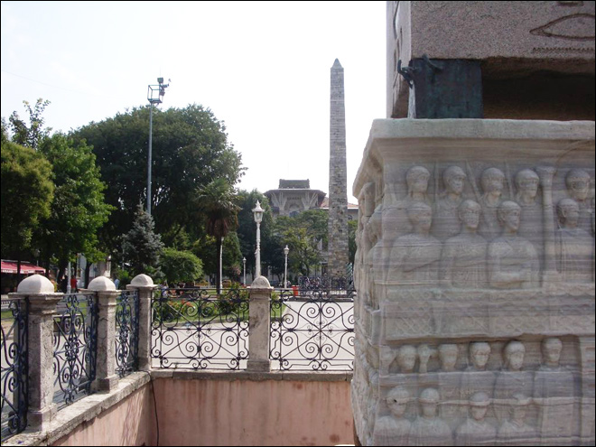
The Blue Mosque takes its name from the mainly blue Iznik tilework decorating its interior. Commissioned by Sultan Ahmet I during a period of declining Ottoman fortunes, it was built between 1609-16. The splendour of the plans provoked great hostility at the time, because a mosque with six minarets was considered a sacrilegious attempt to rival the architecture of Mecca.
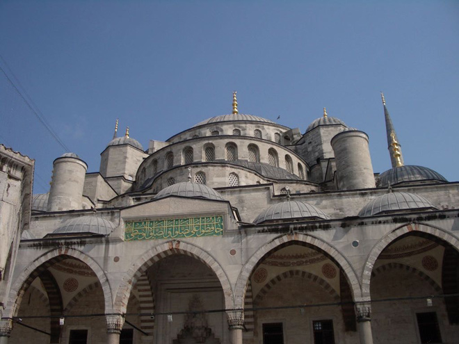
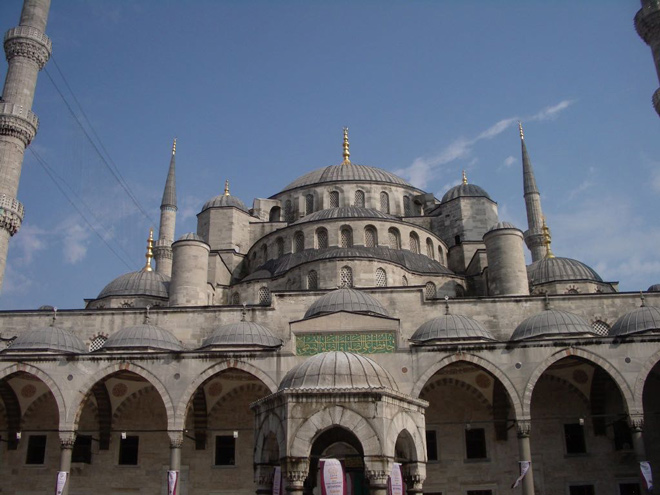
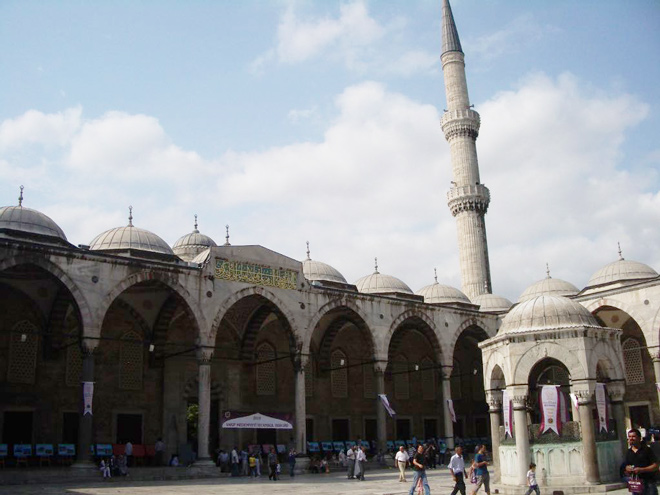
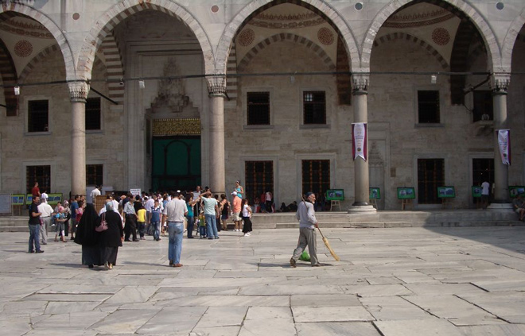
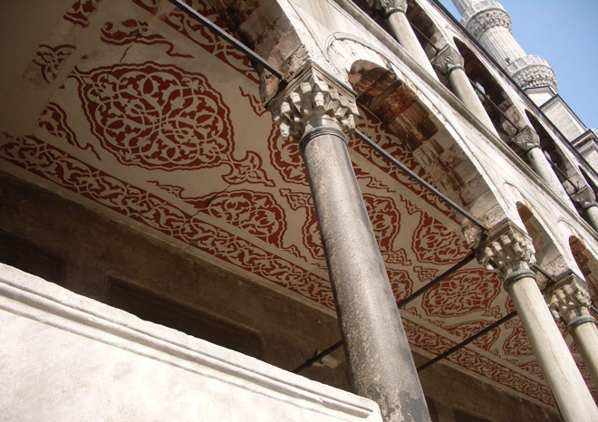
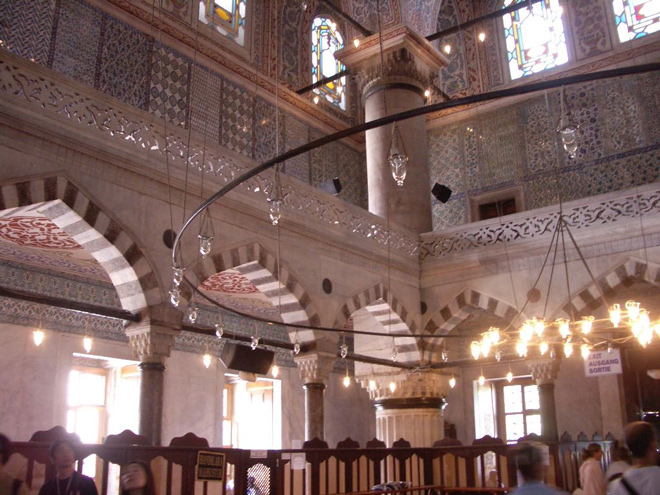
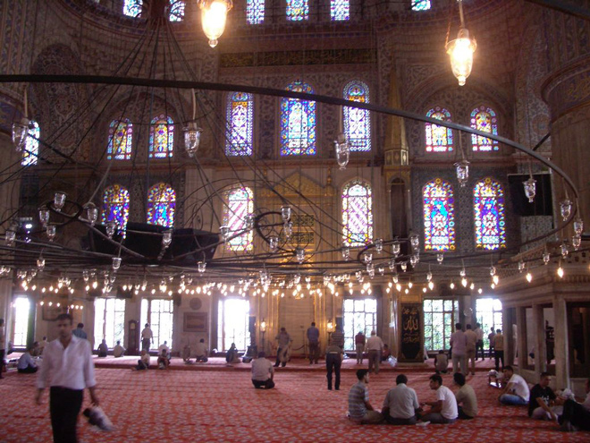
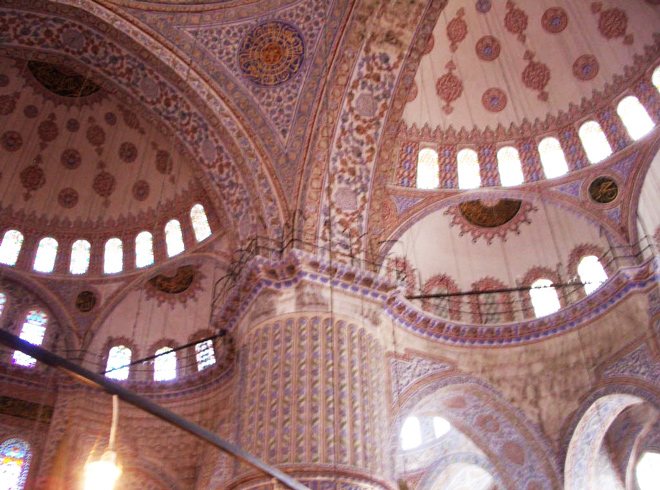
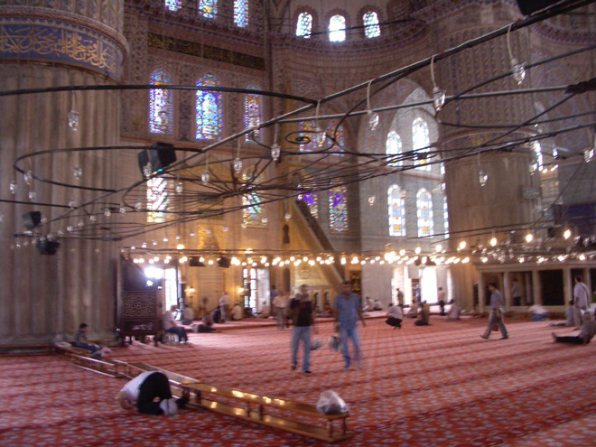
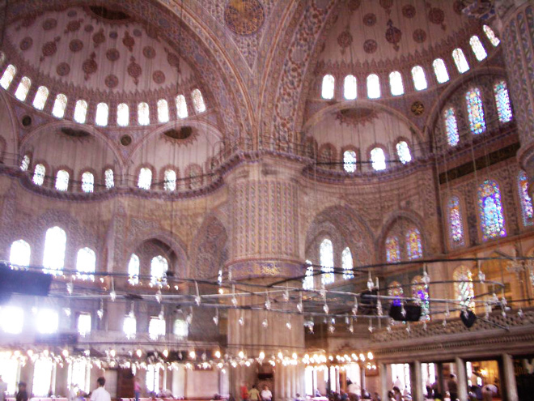
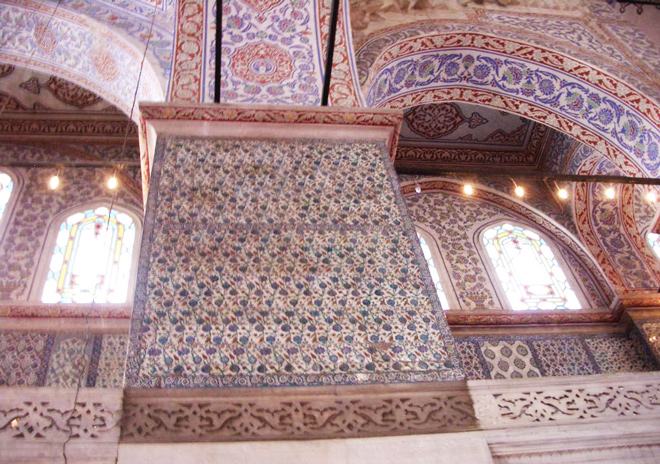
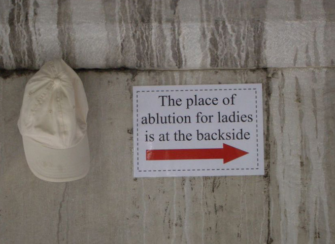